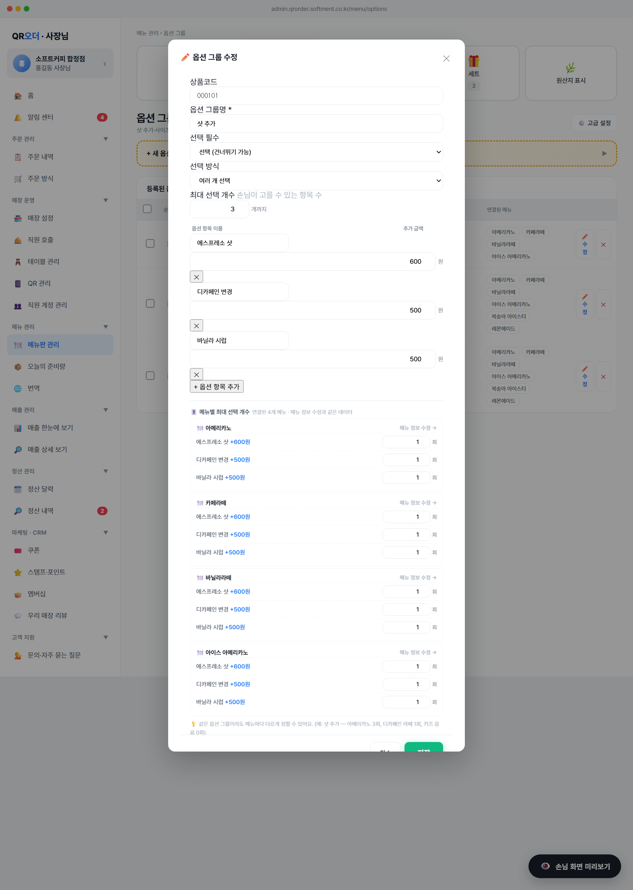

등록된 옵션 그룹을 사장님이 직접 수정할 수 있는 진입점. 기존엔 삭제 버튼만 있어서 항목 1개 바꾸려면 삭제 후 재등록이 필요했음.

OPT_GROUPS 즉시 갱신.[✏️ 수정] [✕] 가로 배치editOpt(id) 호출 → state._optEdit에 그룹 복사 → renderOptEditModal()OPT_GROUPS[id] (해당 그룹 1건)state._optEdit = {id, code, name, mode, maxSelect, required, items[], links[]}✏️ 수정 (파란색) / ✕ (빨간색)state._optEdit 실시간 갱신 (저장 전까지 원본 보존)saveOptEdit() → 검증 후 OPT_GROUPS[id] 직접 덮어쓰기state._optEdit = {...OPT_GROUPS[id]}items: [{name, price}]g.code/name/mode/maxSelect/required/items 일괄 갱신state._optEdit = null 정리alert('옵션 그룹명을 입력해 주세요.')alert('옵션 항목을 1개 이상 입력해 주세요.')maxSelect 자동 1, 여러 개는 최소 2'${name}' 옵션 그룹을 저장했어요